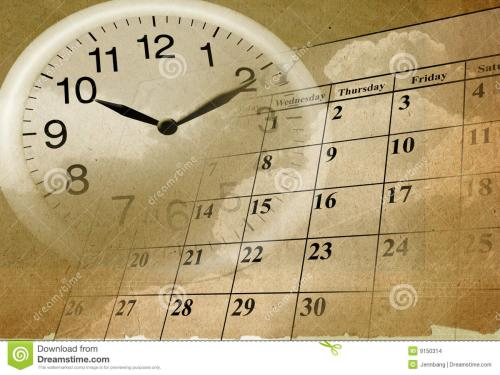

作者名：沈从文 发表时间：1935年10月3日
一切存在严格地说都需要“时间”。时间证实一切，因为它改变一切。气候寒暑，草木荣
枯，人从生到死，都不能缺少时间，都从时间上发生作用。
常说到“生命的意义”或“生命的价值”。其实一个人活下去真正的意义和价值，不过占
有几十个年头的时间罢了。生前世界没有他,他无意义和价值可言的;活到不能再活
死掉了，他没有 生命，他自然更无意义和价值可言。
正仿佛多数人的愚昧与少数人的聪明，对生命下的结论差不多都以为是“生命的意义同价
值是活个几十年，因此都肯定生活，那么吃，喝，睡觉，吵架，恋爱，.活下去等待死，
死后让棺木来装殓他，黄土来掩埋他，蛆虫来收拾他.
生命的意义解释的即如此单纯，“活下去，活着，倒下，死了”，未免太可怕了。因此次一等的
聪明人， 同次一等的愚人，对生命的意义同价值找出第二种结论，就是“怎么样来耗费这几
十个年头”。虽更肯定生活，那么吃，喝，睡觉，吵架，恋爱，……然而生活得失取舍之间，到
底也就有了分歧。
作者名：朱自清 发表时间：1922年3月3日
燕子去了，有再来的时候；杨柳枯了，有再青的时候；桃花谢了，有再开的时候。
但是，聪明的，你告诉我，我们的日子为什么一去不复返呢？——是有人偷了他们罢：
那是谁？又藏在何处呢？是他们自己逃走了罢——如今又到了哪里呢？
我不知道他们给了我多少日子，但我的手确乎是渐渐空虚了。在默默里算着，八千多日子
已经从我手中溜去，像针尖上一滴水滴在大海里，我的日子滴在时间的流里，没有声音，
也没有 影子。我不禁头涔涔而泪潸潸了。
去的尽管去了，来的尽管来着；去来的中间，又怎样地匆匆呢？早上我起来的时候，小屋里
射进两三方斜斜的太阳。太阳他有脚啊，轻轻悄悄地挪移了；我也茫茫然跟着旋转。于是一
洗手的时候，日子从水盆里过去；吃饭的时候，日子从饭碗里过去；默默时，便从凝然的双
眼前过去。
我觉察他去的匆匆了，伸出手遮挽时，他又从遮挽着的手边过去，天黑时，我躺在床上，他便
伶伶俐俐地从我身上跨过，从我脚边飞去了。等我睁开眼和太阳再见，这算又溜走了一日。我
掩着面叹息。但是新来的日子的影儿又开始在叹息里闪过了。
后来才知道，原来时间长了，往事才可堪回首;日子久了，悲伤才会逆流。
笔尖无法记录一世苍凉，只能凭栏倚窗，默默呢喃，倾诉给月色。时间多少苍凉，禁锢悲伤......

记忆在燃，怎样的身影，重叠成我眼中的轮廓?是你，穿过时间的缝隙，越过苍茫的河途，来到我的身前。

我天真的以为随着时间的推移，记忆就会淡忘于心里，埋藏于脑海。
作者名：xxx 发表时间：xxx-xx-xx
这是一个表格，设置了border="1"
| 表头 | 表头 | 表头 |
|---|---|---|
| 单元格内容 | 单元格内容 | |
| 单元格内容 | 单元格内容 | |
| 单元格内容 | 单元格内容 | |
| 单元格内容 | 单元格内容 | |
| 总计 | 100 | |
请输入你的邮箱地址：
请按要求输入你的邮箱
请输入密码：
请重复输入密码：
密码为6-16位字符
性别： 男 女
城市：
爱好： 体育 音乐 游戏 敲代码